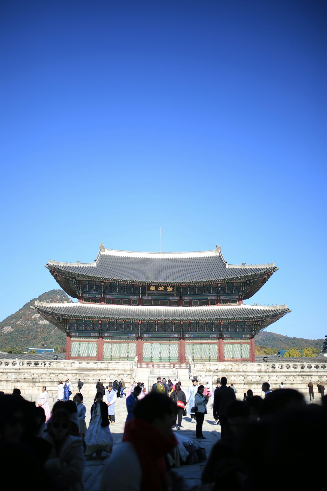
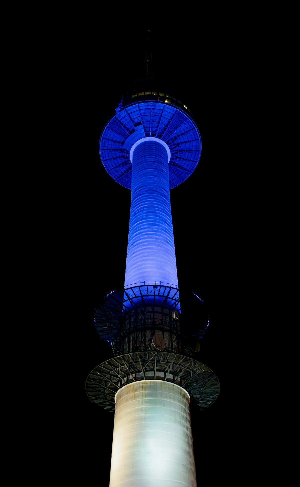
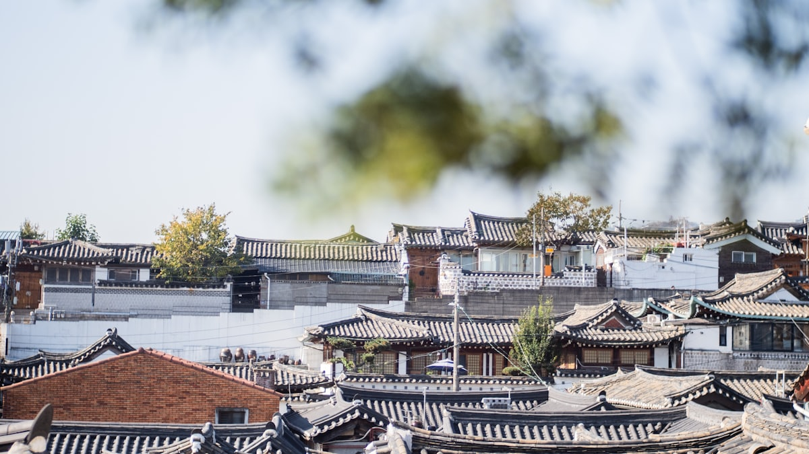
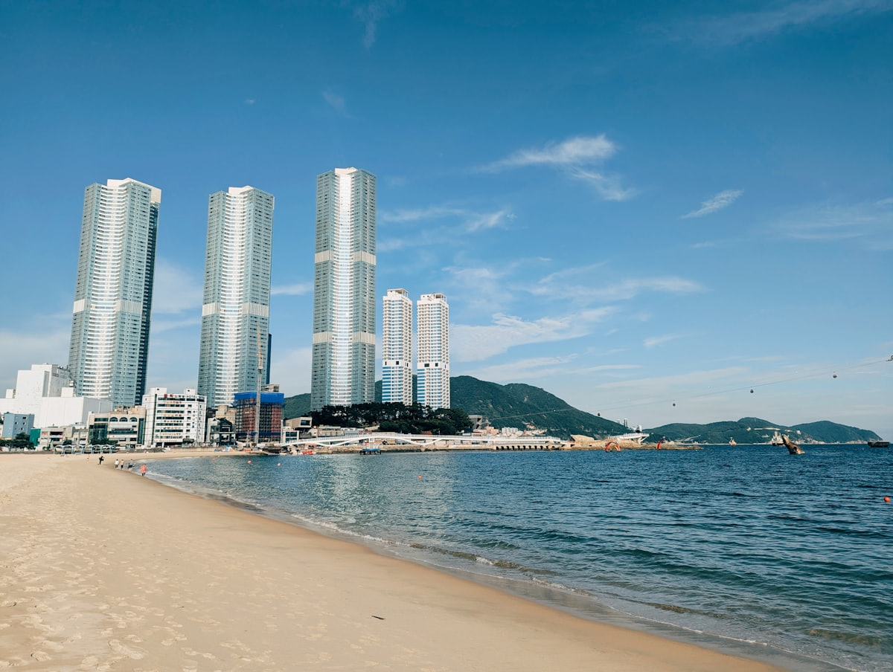
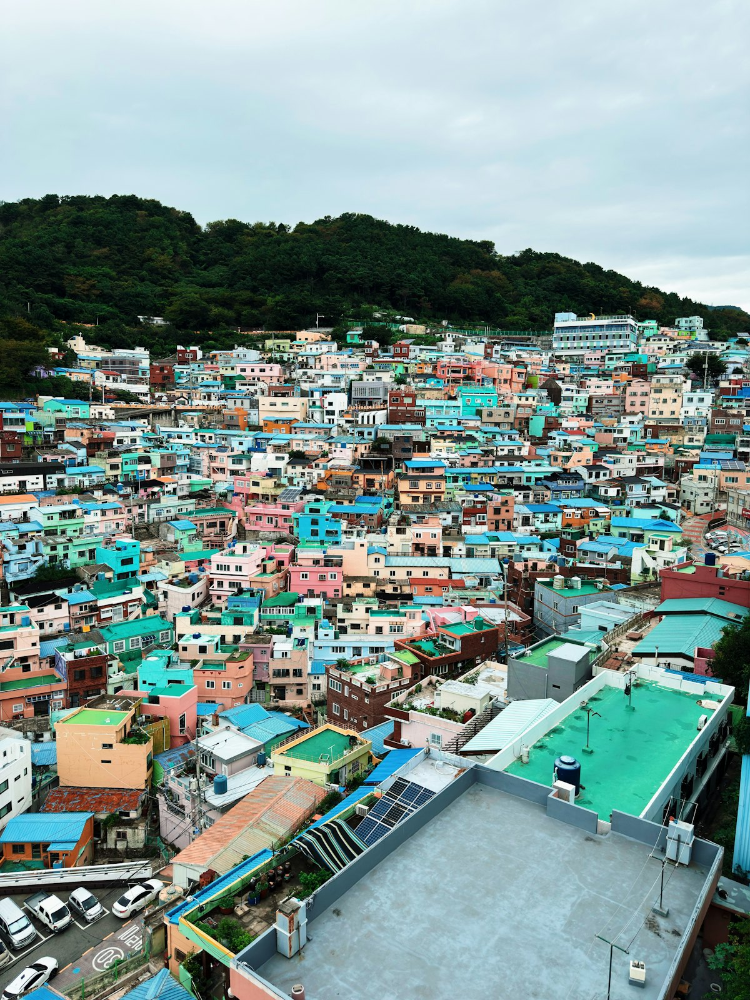
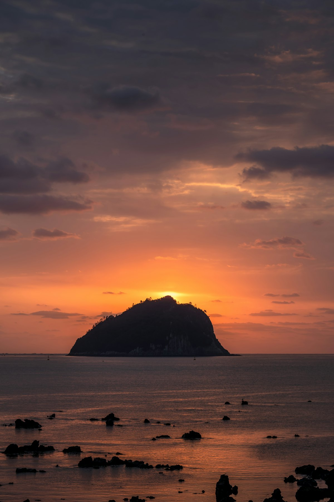
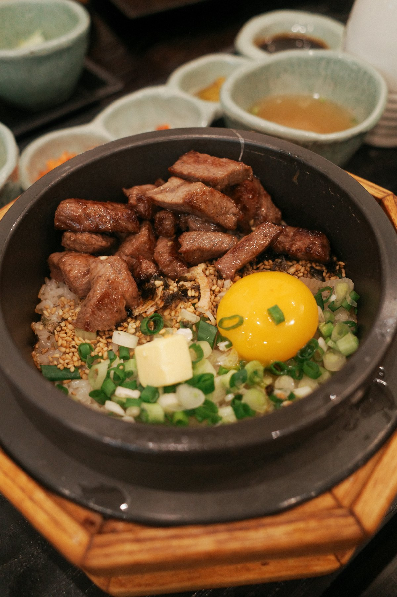

| 事项 | 结论 |
|---|---|
| 事项 | 结论 |
| 签证（最关键） | 韩国本土（首尔/釜山）需韩国旅游签证，单次约 260 元、5–7 个工作日，材料简单较易办；济州岛对中国护照直飞免签 30 天（不可经仁川转机） |
| 推荐方案 | 首尔 5 天（古宫/韩屋/购物/汉江）+ 釜山 3 天 + 济州岛 3 天 + 返程 |
| 返程约束 | 第 12 天从济州返京：直飞约 4.5h 或经首尔转机，旺季机票提前 1 个月订 |
| 行程链 | 首尔 → 釜山（KTX 约 2.5h）→ 济州岛（飞机约 1h） |
| 预算（人均） | 经济 8000–12000 ／ 标准 15000–22000 ／ 舒适 30000–45000（人民币） |
| 三件提前事 | ① 办韩国旅游签证 ② 订 KTX 车票与济州航班 ③ 景福宫周二闭馆、穿韩服免费入场要留意 |
| 季节提醒 | 3–4 月樱花、10–11 月红叶、12–2 月汉拿山雪景；济州黑猪肉全年都是主角 |
| 支付 | T-money 交通卡 + 现金 + Visa/Master 信用卡，微信/支付宝部分商圈可用 |
以下为 12 天 11 晚的推荐节奏：首尔 5 天打底（古宫、韩屋、购物、汉江），KTX 2.5 小时南下釜山 3 天，再飞济州岛 3 天收尾。每日主景点 ≤2 个，本岛交通以地铁+T-money 卡为主，济州段建议租车或包车。
| 日期 | 行程 | 过夜地 | 主题 |
|---|---|---|---|
| D1 抵首尔 | 北京✈首尔（约 2h），入住明洞/钟路，傍晚清溪川散步或明洞小吃 | 首尔 | 抵达+预热 |
| D2 | 景福宫（穿韩服免费）→ 北村韩屋村 → 三清洞 → 仁寺洞 | 首尔 | 古宫与韩屋 |
| D3 | 明洞购物 → 南山 N 首尔塔 → 梨泰院异国风情街 | 首尔 | 地标与潮流 |
| D4 | 汝矣岛汉江公园 → 广藏市场 → 东大门 DDP → 汉江游船 | 首尔 | 汉江与市场 |
| D5 | 首尔自由日（南怡岛/免税店可选），下午 KTX 高铁到釜山 | 釜山 | 转场釜山 |
| D6 | 甘川文化村 → 札嘎其海鲜市场 → 国际市场/BIFF 广场 | 釜山 | 彩色山城+海鲜 |
| D7 | 海云台 → 海东龙宫寺 → 广安里大桥夜景 | 釜山 | 海岸与夜景 |
| D8 | 太宗台 → 南浦洞/龙头山 → 傍晚✈济州岛，东门市场晚餐 | 济州市 | 转场济州 |
| D9 | 涯月海岸公路 → 挟才海水浴场 → 绿茶博物馆（可选） | 济州市 | 西线海岸 |
| D10 | 城山日出峰 → 牛岛 → 涉地可支 | 西归浦 | 东线火山 |
| D11 | 汉拿山徒步（御里牧→灵室）或 中文观光区一日 | 济州市 | 汉拿山日 |
| D12 返程 | 济州✈北京（直飞约 4.5h）或经首尔转机，入境到家 | — | 收尾 |
以下为 12 天全程的逐小时执行时间线，可当作「当天打开照着走」的清单。标注 ※ 的可选项视体力与天气取舍。
| 时间 | 事项 |
|---|---|
| 10:30–13:30 | 北京✈首尔仁川/金浦（约 2h）。首都机场出发，国航 CA123 上午航班常见 |
| 14:00–15:30 | 机场快线 AREX 或机场大巴进市区，入住明洞/钟路酒店，便利店买 T-money 交通卡 |
| 16:00–18:00 | 清溪川（免费）：首尔市中心溪流步道，光化门出发顺流而下 |
| 18:30–21:00 | 明洞步行街（免费）：小吃街炒年糕、鱼饼、韩式炸鸡，熟悉商圈 |
| 21:00 | 回酒店休息（时差 +1h，基本无感） |
| 时间 | 事项 |
|---|---|
| 08:30–09:00 | 地铁 3 号线景福宫站 5 号口出，先到附近韩服店租韩服（约 1–2 万韩元/2 小时，含妆发） |
| 09:00–11:30 | 景福宫（成人 3000 韩元，穿韩服免费）：勤政殿、庆会楼、香远亭，守门将换岗表演 10:00 |
| 11:30–12:30 | 午餐：土俗村参鸡汤（景福宫旁，约 19000 韩元/份） |
| 13:00–15:00 | 北村韩屋村（免费）：600 年历史的韩屋聚落，八景步道俯瞰首尔 |
| 15:00–17:00 | 三清洞（免费）：美术馆与咖啡馆街区 → 仁寺洞（免费）：传统工艺品街 |
| 18:30 | 晚餐：钟路烤肉或韩定食 |
| 时间 | 事项 |
|---|---|
| 09:30–12:00 | 明洞（免费）：乐天百货、Olive Young 药妆、免税店预热扫货 |
| 12:00–13:00 | 午餐：明洞饺子或石锅拌饭 |
| 13:30–17:00 | 南山 N 首尔塔：南山环线巴士 01 路或缆车（往返 15000 韩元），展望台网络价 19900 韩元（提前买省 9000+） |
| 17:00–19:00 | 梨泰院（免费）：异国风情街区，梨泰院 Class 取景地，山顶咖啡看日落 |
| 19:30–21:00 | 南山公园夜景或回明洞吃烤肉 |
| 时间 | 事项 |
|---|---|
| 09:30–11:30 | 汝矣岛汉江公园（免费）：4 月樱花大道、草坪野餐、江景步道 |
| 11:30–13:00 | 广藏市场（免费）：绿豆煎饼、紫菜包饭、生拌牛肉、鱼饼汤 |
| 13:30–16:00 | 东大门设计广场 DDP（免费）：扎哈·哈迪德地标建筑 + 东大门购物街 |
| 16:30–18:30 | 汉江游船（夜间班次约 20000 韩元）或汉江公园骑行 |
| 19:00 | 晚餐：东大门附近部队锅或炸鸡啤酒 |
| 时间 | 事项 |
|---|---|
| 09:00–12:00 | 自由活动：南怡岛（首尔近郊约 1.5h）或乐天世界/首尔乐园，也可补货免税店 |
| 12:00–13:00 | 午餐后回酒店取行李 |
| 14:30–17:00 | 首尔站乘 KTX 到釜山（一般座 59800 韩元≈310 元，约 2h30min） |
| 17:30–19:00 | 入住海云台/西面酒店，海边散步 |
| 19:30 | 晚餐：西面猪肉汤饭（釜山招牌） |
| 时间 | 事项 |
|---|---|
| 09:00–11:30 | 甘川文化村（免费，地图 2000 韩元）：韩国圣托里尼，彩色小房子迷宫，小王子雕像打卡 |
| 11:30–13:00 | 札嘎其海鲜市场（免费）：海女摊位选海鲜，楼上现做生鱼片 |
| 13:30–15:30 | 国际市场 + BIFF 广场（免费）：釜山最大传统市场，元祖糖饼 |
| 16:00–18:00 | 南浦洞逛街，龙头山公园釜山塔（瞭望台 12000 韩元） |
| 19:00 | 晚餐：南浦洞猪肉汤饭或海鲜锅 |
| 时间 | 事项 |
|---|---|
| 08:30–10:00 | 海云台海水浴场（免费）：釜山第一海滩，2km 沙滩晨跑散步 |
| 10:30–13:00 | 海东龙宫寺（免费）：海岸悬崖寺庙，三层灯塔+求子观音，海边步道 |
| 13:00–14:00 | 午餐：海云台附近海鲜汤或刀切面 |
| 14:30–16:30 | 广安里海水浴场（免费）：广安大桥海景，Cafe 街发呆 |
| 19:00–21:00 | 广安里夜景（免费）：广安大桥灯光秀，晚餐烤肉 |
| 时间 | 事项 |
|---|---|
| 08:30–11:30 | 太宗台（免费，Danubi 海岸列车往返 3000 韩元）：釜山最南端悬崖海景，影岛灯塔 |
| 11:30–13:00 | 午餐：影岛海鲜，回酒店取行李 |
| 14:00–15:00 | 金海机场✈济州国际机场（约 1h，提前订单程约 300–450 元） |
| 16:00–17:30 | 入住济州市酒店，东门市场（免费）：济州最大传统市场，黑猪肉串、汉拿峰柑橘 |
| 18:30 | 晚餐：济州市黑猪肉烤肉 |
| 时间 | 事项 |
|---|---|
| 09:00–11:30 | 涯月海岸公路（免费）：韩国最美海岸公路之一，汉潭海岸步道 + 网红咖啡店 |
| 11:30–13:00 | 午餐：涯月海鲜面或烤黑猪肉 |
| 13:30–16:00 | 挟才海水浴场（免费）：济州最出名白沙滩，翡翠绿海水，对面是飞扬岛 |
| 16:30–18:00 | 绿茶博物馆（免费）：o'sulloc 茶园，抹茶冰淇淋（可选） |
| 19:00 | 晚餐：济州市或西归浦海鲜锅 |
| 时间 | 事项 |
|---|---|
| 06:30–07:30 | 想看日出可早起：城山日出峰 05:00 开门，登顶 30 分钟看海上日出 |
| 08:00–09:30 | 城山日出峰（成人 5000 韩元）：世界自然遗产，火山口天池，下午有海女表演 |
| 10:00–15:00 | 牛岛：城山港乘船 15 分钟（往返 10500 韩元），环岛巴士 8000 韩元或助力车 15000 韩元/天，海鲜面+花生冰淇淋 |
| 15:30–17:00 | 涉地可支（免费）：海岸悬崖草地，韩剧 All-in 取景地 |
| 18:00 | 晚餐：城山邑黑猪肉或海鲜锅，宿西归浦 |
| 时间 | 事项 |
|---|---|
| 07:30–08:00 | 出发：御里牧探访中心（海拔 970m 起点），免费入山需登记 |
| 08:30–13:00 | 汉拿山徒步（免费）：御里牧→灵室路线约 2.5h，韩国最高峰海拔 1950m |
| 13:00–14:30 | 灵室站下山，午餐：山脚黑猪肉汤饭 |
| 15:00–17:00 | 中文观光区（可选）：天帝渊瀑布（2000 韩元）、柱状节理带（2000 韩元） |
| 18:30 | 晚餐：济州市海鲜锅收官，采购伴手礼（汉拿峰柑橘、石头爷爷玩偶） |
| 时间 | 事项 |
|---|---|
| 09:00–11:00 | 自由活动：济州东门市场最后补货，汉拿峰柑橘、黑猪肉干、石头爷爷手办 |
| 11:00–12:00 | 退房，午餐：机场附近烤黑猪肉 |
| 13:00–14:30 | 济州国际机场办理值机（提前 2 小时到） |
| 16:00–20:30 | 济州✈北京（直飞约 4.5h，部分为经停航班）或济州✈首尔✈北京联程，入境到家 |
必去（必去）/ 顺路（顺路）/ 可跳过（可跳过）。

必去
必去
必去
必去
必去
顺路图片为 Unsplash 主题图（景福宫、N 首尔塔、北村韩屋、海云台、甘川文化村、城山日出峰、汉拿山、韩式拌饭等均为韩国实景），用于页面配图。更多免费景点：清溪川、汝矣岛汉江公园、广藏市场、东大门 DDP、太宗台、涯月海岸公路、涉地可支。
点击左侧节点可在地图上定位；点击地图 marker 会高亮对应节点。坐标为 WGS-84 转 GCJ-02 纠偏后标注。
以下为单人、不含购物的估算，人民币计价；出发地基准北京。汇率按 100 韩元 ≈ 0.52 元人民币估算。往返国际机票按淡季 2200–4000 元计；国内段（首尔⇄济州 / 釜山⇄济州）按淡季 300–450 元/程计。
| 项目 | 经济（8000–12000） | 标准（15000–22000） | 舒适（30000–45000） |
|---|---|---|---|
| 往返国际机票 | 北京⇄首尔 2200–3500 | 北京⇄首尔直飞 3500–5000 | 直飞商务/灵活 10000–15000 |
| 住宿（11 晚） | 青旅/民宿 180–300/晚 | 商务酒店 400–800/晚 | 海景度假村 1200–2500/晚 |
| 国内交通（KTX+机票+市内） | KTX+济州往返机票+地铁 1800–2600 | 含济州段航班 3000–4500 | 包车/打车+全程航班 9000–13000 |
| 门票与体验 | 基础景点约 300–600 | 含首尔塔/牛岛等 1000–1800 | 全含+潜水/演出 3500–6000 |
| 餐饮（12 天） | 便利店+市场小吃 2200–3200 | 正常下馆子 4500–6500 | 烤肉/参鸡汤/韩定食 10000–16000 |
带娃推荐：首尔乐天世界/首尔大公园（各 1 天）+ 釜山 SEA LIFE 水族馆 + 济州泰迪熊博物馆与海洋馆，把汉拿山徒步换成中文观光区（天帝渊瀑布+柱状节理带）和挟才海水浴场。济州段务必租车，婴儿车+沙滩玩具必备。
冬季汉拿山雪大、登顶需冰爪，改为城山日出峰+牛岛海滨线；首尔可加一天滑雪（芝山/阳智滑雪场）或晨静树木园雪中灯光庭园展。12 月–2 月机票住宿便宜 20–30%，但海边风大，防风外套必带。
| 方式 | 时长 | 参考价 | 备注 |
|---|---|---|---|
| 直飞（推荐） | 北京→首尔约 2h | 往返 2200–4000 元 | 国航/大韩/韩亚/南航，首都/大兴⇄仁川/金浦，每日多班 |
| 首尔✈济州 | 约 1h15min | 单程 150–400 元 | 金浦⇄济州，全球最繁忙航线，廉航/大韩均多班 |
| 釜山✈济州 | 约 1h | 单程 300–450 元 | 金海机场出发，班次少于首尔线，提前订更便宜 |
| 区域 | 价格/晚 | 优点 | 短板 |
|---|---|---|---|
| 首尔·明洞/钟路 | 经济 200–350 / 标准 400–800 | 首游首选，地铁密集，购物方便 | 房间偏小，游客多 |
| 首尔·弘大 | 经济 180–300 / 标准 350–600 | 年轻潮流，性价比高，夜生活足 | 夜间较吵 |
| 釜山·西面 | 经济 150–250 / 标准 300–500 | 交通枢纽，美食多，便宜 | 无海景 |
| 釜山·海云台 | 海景酒店 300–800 | 海景第一排，度假感强 | 离市区远，旺季贵 |
| 济州·济州市 | 民宿 150–300 / 度假村 400–800 | 近机场，餐厅多，适合中转 | 景点少 |
| 济州·西归浦 | 民宿 150–350 | 近汉拿山/中文观光区 | 餐厅选择较少 |